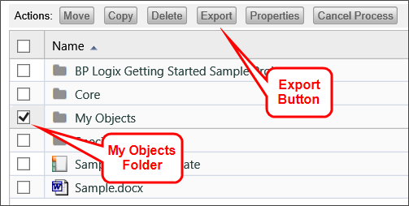
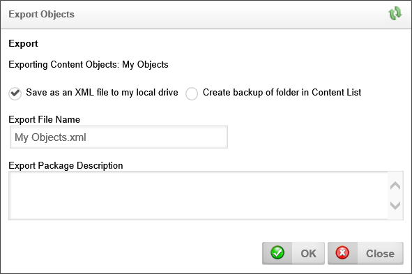

There's nothing worse than putting in a couple of hours of solid work on the computer, only to see it all lost when some glitch causes the item you're working on to close without saving. All of your work is lost. You should make it a practice to regularly save your work, so that this doesn't happen. One way to ensure that your project doesn't get lost or corrupted is to regularly export it.
You will be working to recreate the sample project in a called My Objects. You should periodically export this folder to ensure you never lose your work. You can do this by navigating to the Default Partition folder in the content list. When you've done so, find the My Objects folder and click the check box to the left of the folder name. When you do so, a list of options will appear. Click the option link that is labeled, "Export".

Figure 24: Exporting Objects
The default option to save an XML file to your local drive should already be selected. If it isn't, select it and click the OK button. A popup will appear asking if you want to open or save the exported XML file. Click the Save button, and the file will be downloaded to your computer, in the location specified by your browser settings. You can keep it there in case you need to import the file again later.
Alternatively, you can select the Create backup of folder in Content List radio button, and the folder will be backed up in Process Director, and will be displayed as a file in the Content List.

Figure 25: Export Objects Popup
If you need to restore your backup later, first navigate to the Default Partition folder again. If you've saved your backup to the Content List, select the backup file and download it to your local hard drive. Once you have downloaded the backup file (or if you previously saved your backup to the local hard drive, instead of the Content List)select Import Objects from the dropdown control labeled "Create New…", which is located in the upper right portion of your screen to open the Import Objects screen. Click on the Browse button to open the file dialog box to navigate to the location of your XML backup file and select the file.
Once you've done so, click the Open button to return to the Import Objects screen. The file you've selected should now appear in the text box located next to the Browse button. Click the OK button to import your project, and replace the My Objects folder with the imported version. The old version will be overwritten by the imported objects.
You shouldn't see an error at this stage, but, if you do, contact BP Logix Support for help.